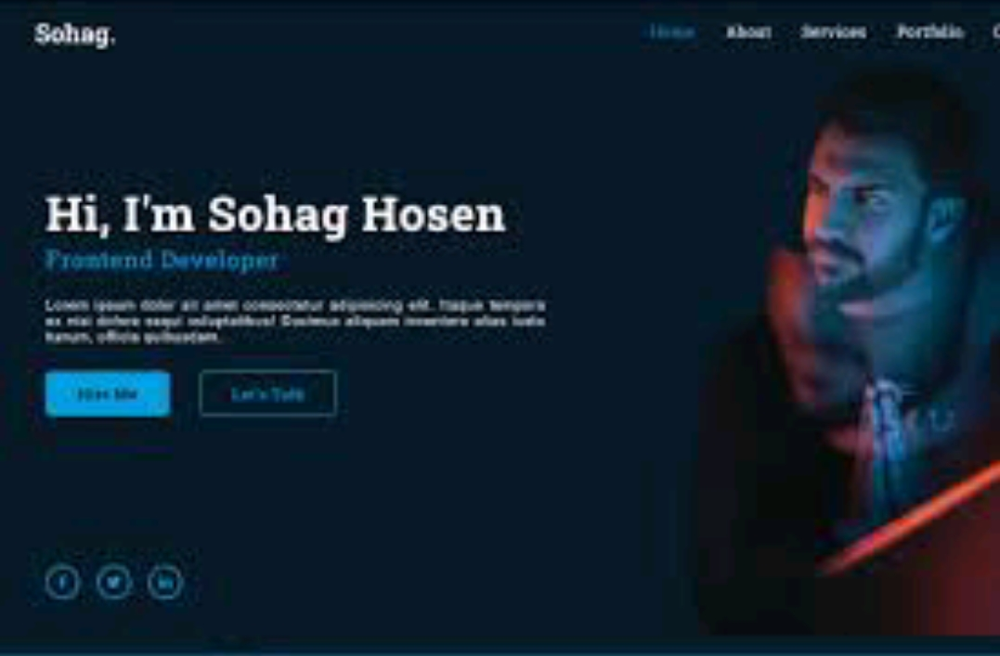
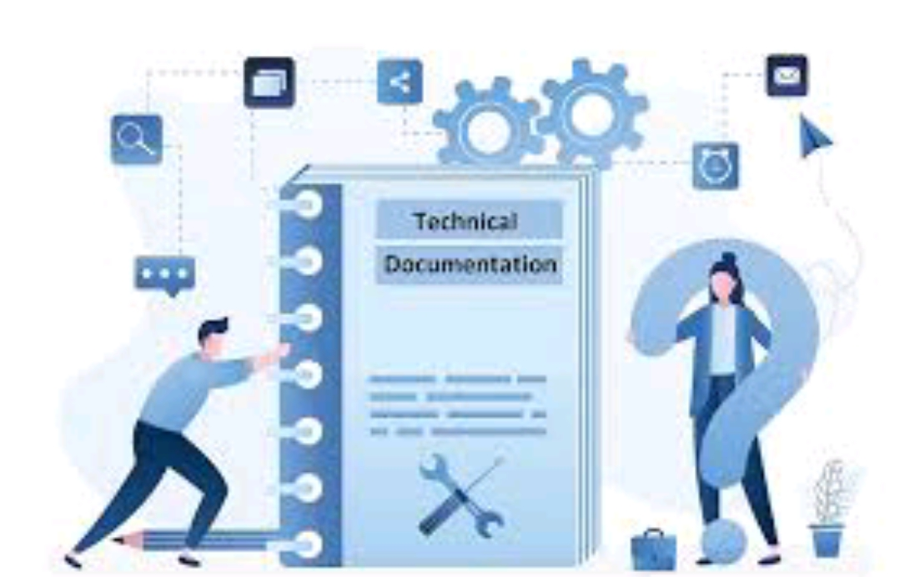
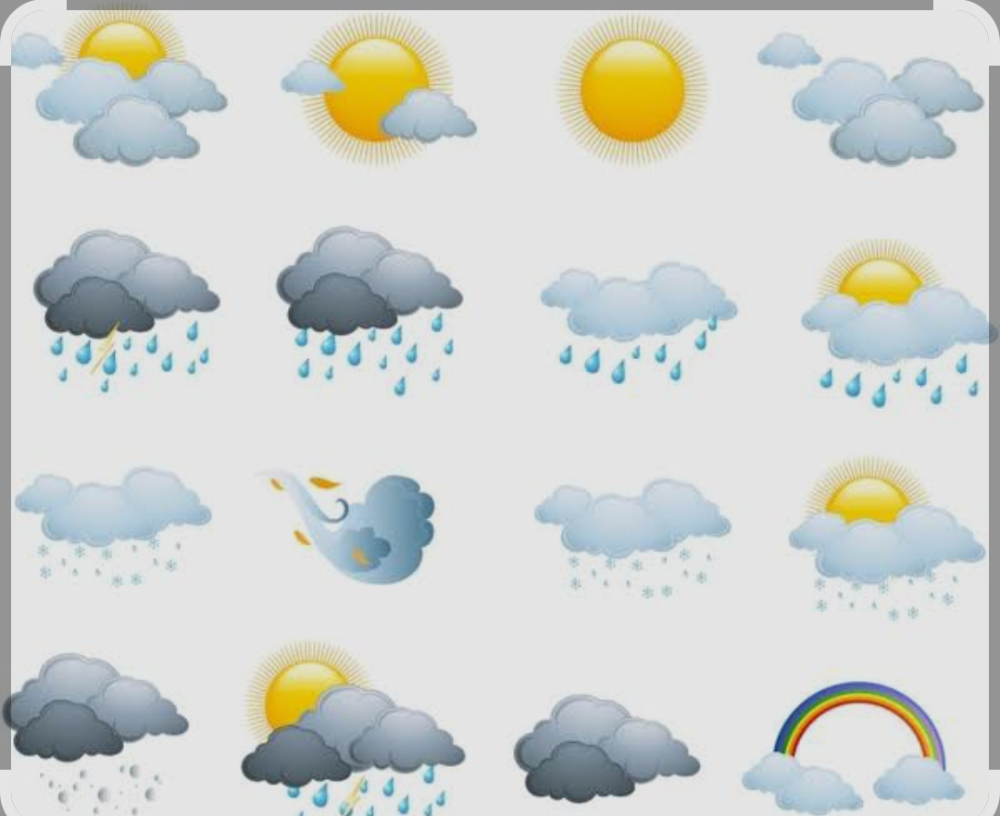
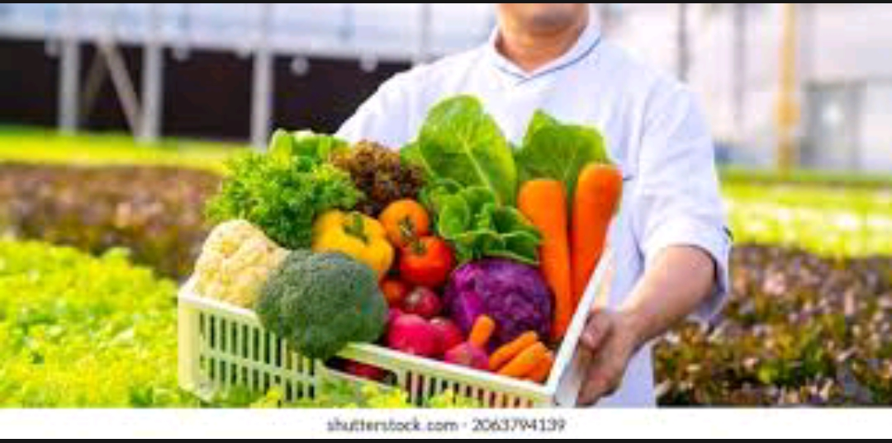
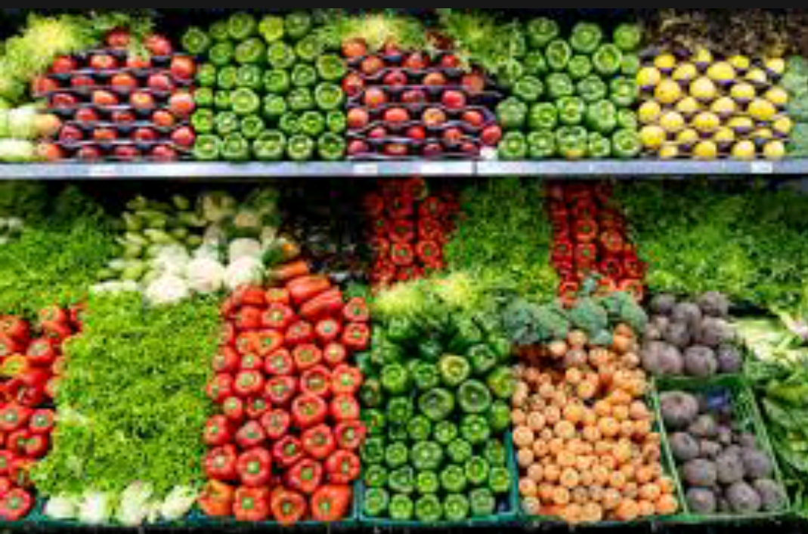

Personal Portfolio Website
Tech: HTML, CSS, JavaScript
A responsive website that highlights my background, skills, and projects.
Technical Documentation Page
Tech: HTML, CSS
A clean documentation layout with multiple sections and well-organized content.
Task Tracker Web App
Tech: React.js, Node.js, MongoDB
A full-stack task management app with user authentication and real-time updates.

Weather Forecast App
Tech: JavaScript, OpenWeatherMap API
Fetches and displays current weather data for any city input by the user.
Community Veggie Delivery Program
Description: Launched a local delivery service to supply fresh vegetables to homes and small restaurants.
Impact: Increased customer reach by 40% and reduced unsold stock.
Farm-to-Market Partnership
Description: Built partnerships with local farmers to get fresh produce directly from the source.
Impact: Improved quality and reduced buying costs by 20%.
Vegetable Display & Sales Optimization
Description: Designed a clean, attractive market display system for showcasing vegetables.
Impact: Boosted customer engagement and sales, especially of perishable items.
